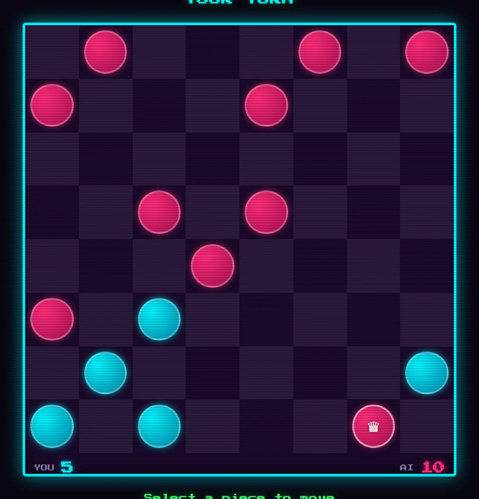
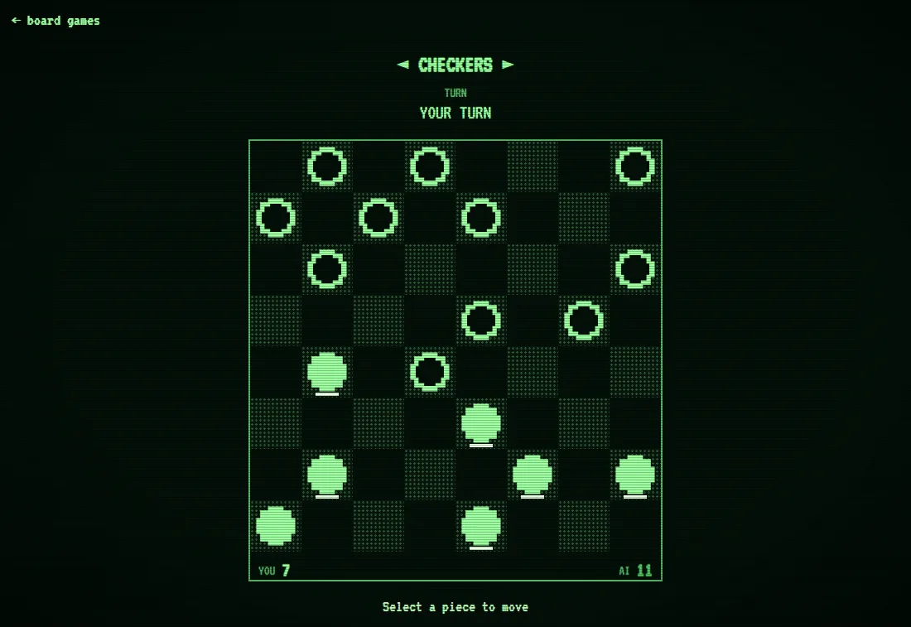
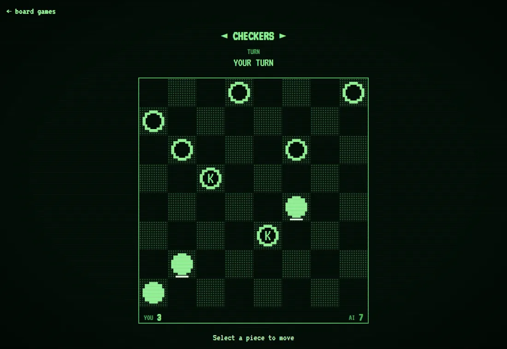

phosphor edition · mandatory jumps · king promotion
Checkers in the arcade's phosphor edition, on a green monochrome terminal: solid pieces against hollow ones, with moves marked by shape.
Play the computer or a friend online with chat, with mandatory jumps, multi-jump chains and king promotion. The terminal version plays the same computer opponent.


pipx install magmacrunch-checkersversion by magmacrunch media
cheapness impact factor 1.1